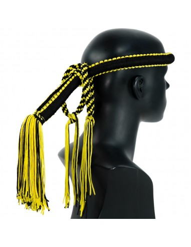

Historia
1. El Origen Guerrero: Muay Boran (Siglos II a.C. - XIII)
El Muay Thai nace del Muay Boran ("boxeo ancestral"). Originalmente, no era un deporte,
sino una técnica militar de supervivencia.
Comenzó en los campos de batalla de la antigua Siam
(hoy Tailandia) y terminó en los cuadriláteros internacionales.
Los soldados tailandeses, al perder sus armas (espadas o lanzas),
utilizaban su cuerpo como una unidad de combate total. Se llama el arte de las 8 extremidades
ya que se aprendió a usar puños, codos, rodillas y espinillas como armas naturales de destrucción.
Dependiendo de la zona, el estilo de combate cambiaba:
- El Muay Korat (fuerza y poder).
- El Muay Chaiya (defensa y codos).
- El Muay Tasao (velocidad).
2. La Consolidación Real: Sukhothai y Ayutthaya (Siglos XIII - XVIII)
Durante este periodo, el arte marcial se volvió esencial para la realeza y los ciudadanos.
- Entrenamiento Real: Los futuros reyes eran enviados a centros de entrenamiento para aprender combate, bajo la idea de que un buen guerrero sería un líder valiente.
- El Rey Tigre (Phra Chao Suea): En el siglo XVIII, este monarca era tan apasionado que solía disfrazarse de plebeyo para participar de incógnito en torneos locales y probar su fuerza contra los mejores. Su ferocidad le valió su apodo y consolidó el Muay Thai como pilar cultural.
3. La Leyenda de Nai Khanom Tom: (1774)
Este es el momento más icónico de su historia.
Tras la caída del reino de Ayutthaya, el guerrero Nai Khanom Tom fue capturado por los birmanos.
Para demostrar la superioridad del boxeo tailandés, el rey birmano lo obligó a pelear:
- Khanom Tom derrotó a 10 campeones birmanos seguidos sin descanso.
- Su hazaña fue tan impresionante que el rey birmano le concedió la libertad a él y a otros prisioneros.
- El 17 de marzo se celebra en su honor el Día del Muay Thai.
4. La Modernización: Del Campo al Ring: (Siglo XX)
- Se abandonó el uso de cuerdas de cáñamo (muay khat chueak) o crines de caballo, adoptando guantes de boxeo occidentales para reducir lesiones graves.
- Se pasó de combatir en patios de templos o terrenos irregulares a utilizar el cuadrilátero estandarizado.
- Se introdujo el cronómetro, dividiendo las peleas en asaltos definidos.
- Se crearon divisiones de peso, sistema de puntuación y normas formales.
Combate
Para entender el combate de Muay Thai, hay que verlo como un diálogo de violencia técnica.
No se trata solo de pegar, sino de cómo usas las "ocho armas" (dos puños, dos codos, dos rodillas y dos espinillas) para quebrar al oponente.
1. La Dinámica de los Asaltos
- Asaltos 1 y 2: Son de "estudio". Los peleadores se mueven lento, miden la distancia y patean suave. Se apuesta mucho en las gradas, y los jueces apenas puntúan estos rounds.
- Asaltos 3 y 4: Es la guerra. Aquí se decide la pelea. La intensidad sube al 100% y se buscan los golpes de poder.
- Asalto 5: Si la pelea está clara, los peleadores suelen "bailar" o tocarse los guantes en señal de respeto, evitando riesgos innecesarios.
2. El "Clinch" (La Lucha en Pie)
Esto es lo que diferencia al Muay Thai del Kickboxing. Cuando los peleadores se abrazan, no se separan.
- Se agarran del cuello (nuca) para controlar la postura del rival.
- El objetivo es bajarle la cabeza para meterle rodillazos al cuerpo o a la cara.
- También se usan proyecciones para tirar al oponente al suelo (aunque no vale la lucha de piso tipo judo o MMA).
3. Las Armas y su Uso
- Pateo Circular (Tae Tad): No se pega con el empeine, sino con el hueso de la espinilla. El objetivo es "cortar" el muslo o las costillas del rival como si fuera un hacha.
- Codos (Sok): Son las armas más peligrosas. Se usan en la distancia corta para cortar la piel (como un bisturí) o noquear de forma inmediata.
- Teep (Patada Frontal): Es como un "jab" con el pie. Sirve para mantener la distancia y desequilibrar al otro.
4. El Sistema de Puntuación: (Muy especial a nivel competitivo)
A diferencia del boxeo, donde cada round cuenta igual, en el Muay Thai:
- Se valora más el daño efectivo y la actitud de dominio.
- Una patada potente a las costillas suma más que tres jabs de puño.
- Si te tiran al suelo en el clinch, pierdes muchos puntos en ese asalto.
- Se premia la "calma" (Muay Jai Yen): el peleador que recibe un golpe y no muestra dolor es mejor valorado por los jueces.
5. La Música: (Sarama)
Durante todo el combate suena una banda en vivo. El ritmo de la música acelera a medida que avanza el asalto, empujando a los peleadores a aumentar la agresividad. Es hipnótico y marca el corazón de la pelea.
Musica a continuacion:
Filosofía
La filosofía del Muay Thai es lo que separa al guerrero del simple peleador. No se trata solo de violencia; en su núcleo, es un camino de autocontrol, respeto y mérito espiritual.
1. El concepto de "Muay Jai Yen": (Corazón Frío)
Esta es quizás la enseñanza más importante. Un peleador debe mantener la calma absoluta bajo presión.
- Si te golpean fuerte, no puedes mostrar dolor ni enojo.
- La idea es que el guerrero que pierde el control de sus emociones, pierde la pelea. El "corazón frío" te permite observar los errores del rival mientras tu cuerpo está en medio del caos.
2. El Respeto y la Gratitud: (Wai Kru)
Antes de cada combate, el peleador realiza el Wai Kru Ram Muay. No es solo un baile; es un acto de humildad profunda:
-
Respeto al Maestro: Se agradece a quien te enseñó a defenderte.

- Respeto a la Familia: Se pelea para honrar el apellido y el linaje.
-
Respeto al Rival: Al terminar la pelea, los luchadores se arrodillan uno frente al otro. Se entiende que sin un oponente digno, no hay crecimiento personal.

3. La Protección Espiritual: (Amuletos y Rituales)
Para un tailandés, el combate tiene una dimensión mística. La cabeza se considera la parte más sagrada del cuerpo:
-
El Mongkhon: Es la corona que el entrenador pone sobre la cabeza del peleador. Representa la sabiduría y la protección de su gimnasio. Solo el maestro puede tocarlo y retirarlo.

-
El Prajiad: Los brazaletes. Antiguamente, las madres tejían trozos de sus propios vestidos en ellos para que sus hijos volvieran vivos de la guerra. Representan la conexión con el hogar y la protección divina.

4. La Ley del Karma y el Esfuerzo:
En la cultura tailandesa (influenciada por el budismo), existe la creencia de que cosechas lo que siembras.
- Si entrenas con pereza, el ring te castigará.
- Si eres una persona arrogante o irrespetuosa fuera del ring, tu "suerte" espiritual (Baramee) se agota. La victoria no es solo física, es una recompensa por tu disciplina moral.
5. El Corazón de León:
En Tailandia se valora más a un peleador que pierde con valentía (yendo siempre hacia adelante) que a uno que gana "corriendo" o evitando el contacto.
La filosofía es morir de pie antes que vivir huyendo.
Se premia la tenacidad y el espíritu inquebrantable ante la adversidad.